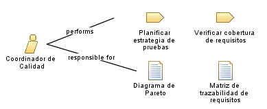

| Role: Coordinador de Calidad |
| |
 |
| Profesional responsable de planificar las estrategias de prueba, asegurar la trazabilidad de los casos de prueba con los requisitos funcionales y coordinar con los testers la cobertura completa del sistema. Supervisa que el sistema cumpla con los estándares de calidad definidos por la organización. |
|
Relationships
 |
| Primary Performs |
|
| Modifies |
|
Main Description
| Profesional responsable de planificar las estrategias de prueba, asegurar la trazabilidad de los casos de prueba con los
requisitos funcionales y coordinar con los testers la cobertura completa del sistema. Supervisa que el sistema cumpla con
los estándares de calidad definidos por la organización. |
Staffing
| Skills | Trabajo en equipo, estrategias para pruebas, comprension de requisitos para trazabilidad |
|